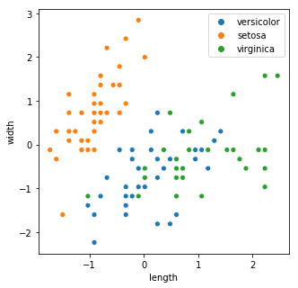

import pandas as pd
import numpy as np
import seaborn as sns
from matplotlib import pyplot as plt
from sklearn import datasets
import warnings
warnings.filterwarnings('ignore')Repeating the contents of http://appliedprogramming.net/machine-learning/introduction.html
Supervised classification
iris = datasets.load_iris()
x_iris, y_iris = iris.data, iris.target
print(f'x.shape: {x_iris.shape}, y.shape - {y_iris.shape}')x.shape: (150, 4), y.shape - (150,)from sklearn.preprocessing import StandardScaler
from sklearn.model_selection import train_test_split
from sklearn.pipeline import Pipeline
from sklearn.linear_model import SGDClassifierx_train, x_test, y_train, y_test = train_test_split(x_iris[:,:2], y_iris, test_size=0.25, random_state=33)
# scale the features
scaler = StandardScaler()
x_train = scaler.fit_transform(x_train)
labels = [iris.target_names[o] for o in y_train]
fig, ax = plt.subplots(figsize=((5,5)))
sns.scatterplot(x_train[:,0], x_train[:, 1], hue=labels)
ax.set_xlabel('length')
ax.set_ylabel('width')Text(0,0.5,'width')
classifier = SGDClassifier()
classifierSGDClassifier(alpha=0.0001, average=False, class_weight=None, epsilon=0.1,
eta0=0.0, fit_intercept=True, l1_ratio=0.15,
learning_rate='optimal', loss='hinge', max_iter=None, n_iter=None,
n_jobs=1, penalty='l2', power_t=0.5, random_state=None,
shuffle=True, tol=None, verbose=0, warm_start=False)classifier.fit(x_train, y_train)SGDClassifier(alpha=0.0001, average=False, class_weight=None, epsilon=0.1,
eta0=0.0, fit_intercept=True, l1_ratio=0.15,
learning_rate='optimal', loss='hinge', max_iter=None, n_iter=None,
n_jobs=1, penalty='l2', power_t=0.5, random_state=None,
shuffle=True, tol=None, verbose=0, warm_start=False)classifier.coef_array([[-31.5436696 , 25.922051 ],
[ 7.45335653, -10.85334472],
[ 19.25894089, 7.53435314]])The classifier learnt coefficients for 3 planes, as it does a one-vs-many classification. Let us plot these planes
x_min, x_max = x_train[:,0].min() - 0.5, x_train[:,0].max() + 0.5
y_min, y_max = x_train[:,1].min() - 0.5, x_train[:,1].max() + 0.5
def plot_x(idx, ax):
xs = x_train[:,0][y_train == idx]
ys = (-classifier.intercept_[idx]-xs*classifier.coef_[idx,0])/classifier.coef_[idx,1]
sns.scatterplot(x_train[:,0], x_train[:,1], hue=labels, ax=ax)
sns.lineplot(xs, ys, ax=ax)
fig, axs = plt.subplots(1, 3, figsize=(15,5))
for idx in range(len(iris.target_names)):
plot_x(idx, axs[idx])Evaluating our results
from sklearn import metrics
y_pred = classifier.predict(x_test)
print(f'accuracy - {metrics.accuracy_score(y_test, y_pred)}')accuracy - 0.5print(metrics.classification_report(y_test, y_pred, target_names=iris.target_names)) precision recall f1-score support
setosa 0.00 0.00 0.00 8
versicolor 0.00 0.00 0.00 11
virginica 0.50 1.00 0.67 19
avg / total 0.25 0.50 0.33 38
print(metrics.confusion_matrix(y_test, y_pred))[[ 0 0 8]
[ 0 0 11]
[ 0 0 19]]Cross Validation
from sklearn.cross_validation import cross_val_score, KFold
clf = Pipeline([
('scaler', StandardScaler()),
('linear_model', SGDClassifier())
])
# create a kfold cross validation iterator
cv = KFold(x_iris.shape[0], n_folds=5, shuffle=True, random_state=33)
cvsklearn.cross_validation.KFold(n=150, n_folds=5, shuffle=True, random_state=33)scores = cross_val_score(clf, x_iris, y_iris, cv=cv)
scoresarray([0.86666667, 0.86666667, 0.93333333, 1. , 0.9 ])Clustering
x_train, x_test, y_train, y_test = train_test_split(x_iris, y_iris, test_size=0.25)
scaler = StandardScaler().fit(x_train)
x_train = scaler.transform(x_train)
x_test = scaler.transform(x_test)from sklearn import cluster
clf_sepal = cluster.KMeans(init='k-means++', n_clusters=3, random_state=33)
clf_sepal.fit(x_train[:, 0:2])KMeans(algorithm='auto', copy_x=True, init='k-means++', max_iter=300,
n_clusters=3, n_init=10, n_jobs=1, precompute_distances='auto',
random_state=33, tol=0.0001, verbose=0)Print the labels assigned
print(clf_sepal.labels_)[1 0 0 1 1 2 0 0 0 2 0 1 2 1 0 0 2 1 2 2 0 0 0 2 2 1 0 1 2 0 1 2 2 2 1 0 1
0 2 1 2 2 0 0 0 0 2 1 2 1 2 2 2 0 1 0 0 0 2 0 0 1 2 1 2 0 0 0 2 0 2 2 2 0
0 2 0 1 1 2 0 2 1 1 2 2 1 0 1 0 0 0 2 1 0 2 0 1 2 1 1 2 0 0 0 0 0 1 2 2 0
1]colormarkers = [['red', 's'], ['greenyellow', 'o'], ['blue', 'x']]
step = 0.01
margin = 0.1
sl_min, sl_max = x_train[:, 0].min() - margin, x_train[:, 0].max() + margin
sw_min, sw_max = x_train[:, 1].min() - margin, x_train[:, 1].max() + margin
# meshgrid returns two vectors one for x and y of length xy, which reprsent coordinates for the xy points.
sl, sw = np.meshgrid(np.arange(sl_min, sl_max, step),
np.arange(sw_min, sw_max, step))
zs = clf_sepal.predict(np.c_[sl.ravel(), sw.ravel()]).reshape(sl.shape)
centroids_s = clf_sepal.cluster_centers_Display the data points and the calculated regions
fig, ax = plt.subplots(figsize=(6,6))
ax.imshow(zs, interpolation='nearest', extent=(sl.min(), sl.max(), sw.min(), sw.max()))
ax.set_xlim(sl_min, sl_max)
ax.set_ylim(sw_min, sw_max)
ax.set(xlabel='Sepal Length', ylabel='Sepal Width', title='KMeans clustering')
hues = [colormarkers[o][0] for o in y_train]
markers = [colormarkers[o][1] for o in y_train]
sns.scatterplot(x_train[:,0], x_train[:,1], hue=hues, markers=markers, legend=False)Supervised Learning: Regression
from sklearn.datasets import load_boston
from sklearn.linear_model import SGDRegressor
boston = load_boston()
print(f'shape - {boston.data.shape}')
print(f'boston feature names - {boston.feature_names}')shape - (506, 13)
boston feature names - ['CRIM' 'ZN' 'INDUS' 'CHAS' 'NOX' 'RM' 'AGE' 'DIS' 'RAD' 'TAX' 'PTRATIO'
'B' 'LSTAT']x_train = boston.data
y_train = boston.target
x_train = StandardScaler().fit_transform(x_train)
y_train = StandardScaler().fit_transform(np.expand_dims(y_train, axis=1))
y_train.shape(506, 1)import sklearn
def train_and_evaluate(model, x_train, y_train, folds):
model.fit(x_train, y_train)
print(f'score on training set {model.score(x_train, y_train):.2f}')
cv = sklearn.cross_validation.KFold(x_train.shape[0], folds, shuffle=True, random_state=33)
scores = sklearn.cross_validation.cross_val_score(model, x_train, y_train, cv=cv)
print(f'Avg score using {folds} cross validation {np.mean(scores):.2f}')model = SGDRegressor(loss='squared_loss', penalty='l2', random_state=33)
train_and_evaluate(model, x_train, y_train, 5)score on training set 0.73
Avg score using 5 cross validation 0.70